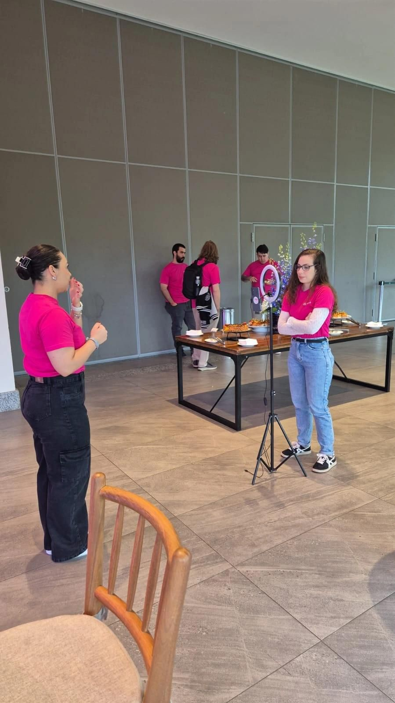

The problem
Auren Energia, Brazil's leading renewable energy trader, had two internal channels that weren't working. The weekly newsletter went out on schedule, with no editorial curation and no clear layout. The internal Instagram was inactive and had no defined purpose.
The goal
Turn both channels into places employees actually engage with, and prove it with data.
What I noticed
Neither channel had a way to listen. There was no platform providing data on the newsletter, and nobody was analysing engagement on Instagram. So there was no way to know whether the content we created was what employees really wanted to see.
What I did
Started measuring
I implemented Brevo to track the newsletter's open rate and click-through for the first time, segmented audiences, tested subject lines and began analysing Instagram engagement. For the first time, the results of both channels came together in one report, presented to leadership and shared by email.
Edited the newsletter like a newsroom
Guided by the data, I curated what really mattered each week, refreshed the layout and added new formats: employee interviews, video and images.
Gave Instagram a purpose
I repositioned it as a human, employee-facing space, with a monthly editorial calendar and richer formats (employee interview videos, animations and carousels) twice a week.

What changed
- 75%
Newsletter open rate 60% → 75% in six months, above the 2025 internal email averages of 64% overall and 70.9% in the energy sector¹
- 2x
Internal Instagram engagement 5% → 11% in one month, more than doubled
- One report
For the first time, a single report bringing together Instagram and newsletter data, presented to leadership and shared by email
What changed at Auren
Source for the 2025 average: PoliteMail Internal Communications Benchmark.
¹ Source: PoliteMail 2025 Internal Communications Benchmark.
What I learned
Data is what turns a routine task into a strategic conversation. Once there are numbers, every editorial choice can be tested — and defended.
Her writing is highly polished, she has a sharp eye for stories and a special talent for proposing stories that not only inform but also support the goals and KPIs that need to be addressed.
Same project
Up to 5x less rework
A single intake with a standard brief form, so no request got lost or duplicated.
Formal recognition from the client
Took over a full account during a team absence and reorganised the backlog.
Internal materials are confidential; visuals are recreated or show public events.